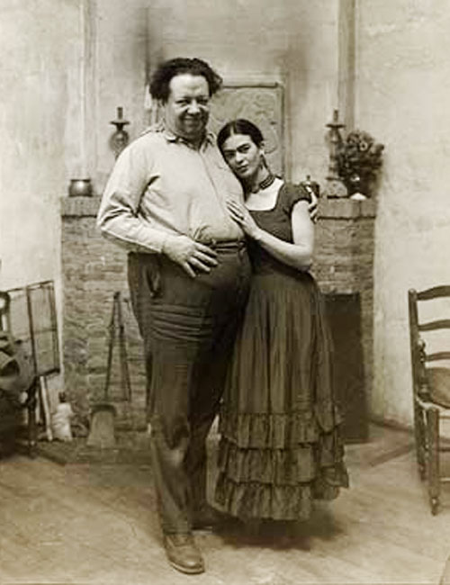

Magdalena Carmen Frida Kahlo Calderón nace el 6 de julio de 1907 en la Ciudad de México. A los seis años de edad contrae poliomielitis que le deja la pierna derecha más corta. A los dieciocho años sufre un accidente cuando un choque afecta al transporte donde ella viajaba. Frida se lesiona la espina dorsal. Debido a la inmovilidad a la que se ve sometida, durante los primeros meses de recuperación Frida comienza a pintar. Así conoce a Diego Rivera.
Fue una pareja muy tormentosa, amor y odio se conjugaban en un romance que tuvo varias idas y vuelta, para siempre volver a estar juntos. Él era 22 años mayor que ella, pero eso no fue impedimento para quedar flechada apenas lo vio. En 1929, con 20 años ella y 42 él, se casaron.
La infidelidad por ambas partes fue una constante en este matrimonio que se divorció en 1940 para volverse a casar en 1941. A pesar de ser feo y gordo – según ella – Diego parece haber poseído una gran atracción para las mujeres.
La clave de su matrimonio estuvo no solo en el amor, la pasión física y los intereses políticos comunes. Frida y Diego se admiraban profundamente, se respetaban como artistas y como seres humanos.
final de su vida la salud de Frida, siempre frágil, decae. En 1953, ante la amenaza de gangrena, se le amputa -desde la rodilla- la pierna derecha. Frida Kahlo muere en la Casa Azul el 13 de julio de 1954.